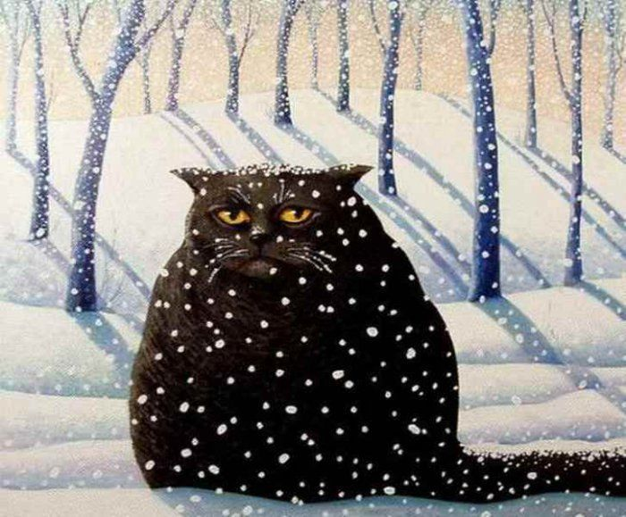

Праздник первого снега
Опубликовано 29 апреля 2020 года
Праздник первого снега — день, в который с неба впервые после весны, лета и осени начинает идти снег.
Кратко
- Другие названия: День первого снега
- Дата празднования: определенной нет; когда начинает идти первый снег
- Место: Россия
- Символ: снежинка
История
Впервые идея для этого праздника возникла еще в древности. Многие, особенно дети, встречали снег с восторгом, хотя, конечно, это означало прекращение сельскохозяйственной деятельности и наступление самого, пожалуй, тяжелого времени года. День первого снега праздновался с переменным успехом: например, во времена татаро-монгольского ига эта традиция отошла на второй план. Однако на отдаленных территориях, не попавших под влияние Золотой Орды, День первого снега отмечали все равно, а в Новгороде, чудом не подвергнувшемуся разрушению, праздновать стеснялись, видимо, чувствуя себя заодно с завоеванными русскими землями.
К сожалению, к нашему времени данный праздник уже забылся, но в 1996 году неравнодушные люди, опираясь на рассказы старожилов в изолированных деревнях, рассказали стране об этом дне. Так праздник родился во второй раз.
Как отмечать?
Строгих правил, что делать в Праздник первого снега, нет. Одни предпочитают оставаться дома, про себя возрадовавшись появлению снега, в то время как другие активно гуляют, наслаждаясь завораживающими осадками. Безусловно, по Сети гуляет приличное количество руководств, предписывающих поведение в День первого снега. Процитируем фрагмент одного их них:
1. Завидев первый снег, поднимитесь с дивана и распахните окно. Повдыхайте свежий морозный воздух, но не переусердствуйте, иначе можно словить простуду.
2. После этого одевайтесь потеплее и идите на улицу.
3. Пару минут половите снежинки и посмотрите, как они тают.
4. Позовите на улицу друзей и поиграйте в снежки.
5. Активно проведя время на улице, возвращайтесь домой и, если снег еще падает, выпейте чая, наблюдая за снегом.
Как видим, развлечения в этот день связаны только со снегом, ведь он — главный виновник торжества.
Другие статьи
 |
На заглавную |
 |
День жирного пробелаОпубликовано 1 мая 2020 года |
Четверг гематогенаОпубликовано 26 апреля 2020 года |